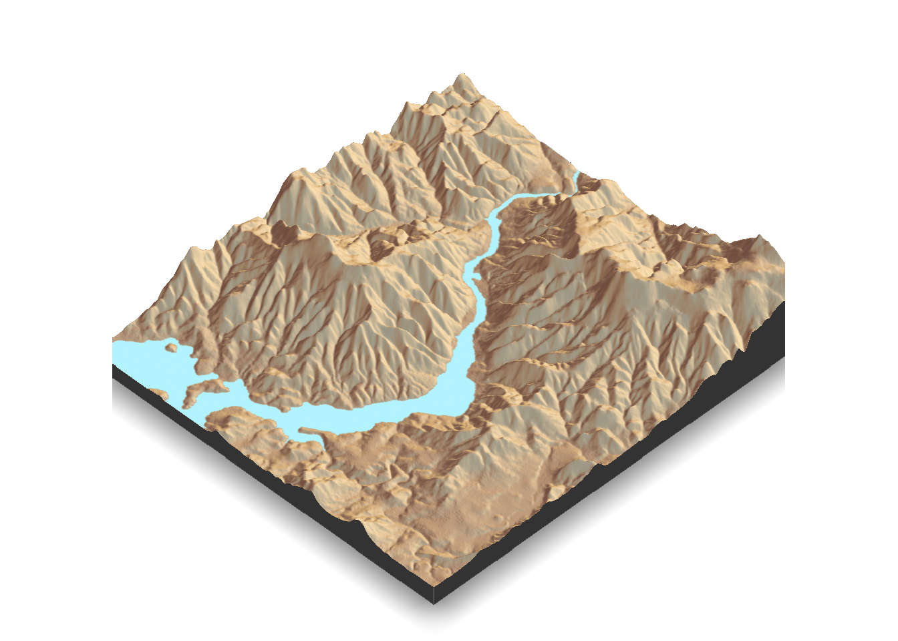

Code
library(rayshader)
loadzip = tempfile()
download.file("https://tylermw.com/data/dem_01.tif.zip", loadzip)
localtif = raster::raster(unzip(loadzip, 'dem_01.tif'))
unlink(loadzip)Author: Abhijit Dasgupta and Anderson Monken
Download: Click here to download the demo qmd
No lab assignment this week. This is a demonstration-only lab.
We’ll explore rayshader, a package that produces 2- and 3-dimensional data visualization in R. It primarily produces 2D and 3D maps that include elevation and lighting. It also has the ability to translate ggplot2 objects into 3D visualizations. It can also create animations of maps with rotation and custom camera movements. Let’s see how.
The main concepts involved in rayshader are raytracing, hillshading and overlays.
Most of the functions in rayshader relate to how light and color work on an elevation map, and also has functions to add various overlays like points, lines, polygons, and even water bodies.
We first load a map in raster format.
library(rayshader)
loadzip = tempfile()
download.file("https://tylermw.com/data/dem_01.tif.zip", loadzip)
localtif = raster::raster(unzip(loadzip, 'dem_01.tif'))
unlink(loadzip)We then convert it to a matrix
elmat <- raster_to_matrix(localtif)Here’s how this file looks like:
plot_map(elmat / max(elmat))Now we’ll use an inbuilt texture to render a plot
elmat |>
sphere_shade(texture="desert") |>
plot_map()Since rayshader deals with light, it has the ability to change the angle of the sun in the visualization
elmat |>
sphere_shade(texture="desert", sunangle=45) |> plot_map()We’ll now add water into this landscape.
elmat |>
sphere_shade(texture = 'desert') |>
add_water(detect_water(elmat), color = 'desert') |>
plot_map()Now we can transform this into a 3D map with the plot_3d function.
elmat |> sphere_shade(texture='desert') |>
add_water(detect_water(elmat), color = 'desert') |>
plot_3d(elmat, zscale=10, fov=0, theta=135,zoom = 0.75, phi = 45, windowsize = c(1000,1000))
render_snapshot()
rgl::clear3d()Adapted from: https://wcmbishop.github.io/rayshader-demo/
Use a tool like https://geojson.io to find the right bounding box for your map of interest.
Find the coordinates and enter them here:
library(leaflet)
# define bounding box with longitude/latitude coordinates
# south beach Miami
# bbox <- list(
# p1 = list(long = -80.1174, lat = 25.7177),
# p2 = list(long = -80.2136, lat = 25.8089)
# )
# Florida Keys
# bbox <- list(
# p1 = list(long = -80.5054, lat = 25.0293),
# p2 = list(long = -80.7928, lat = 24.8462)
# )
# san jose
bbox <- list(
p1 = list(long = -121.8033, lat = 37.2732),
p2 = list(long = -122.1459, lat = 37.4816)
)Now, use Leaflet to confirm you have the map area you intended
leaflet() %>%
addTiles() %>%
addRectangles(
lng1 = bbox$p1$long, lat1 = bbox$p1$lat,
lng2 = bbox$p2$long, lat2 = bbox$p2$lat,
fillColor = "transparent"
) %>%
fitBounds(
lng1 = bbox$p1$long, lat1 = bbox$p1$lat,
lng2 = bbox$p2$long, lat2 = bbox$p2$lat,
)Define the image size that will be used to download the associated elevation data.
Function that is designed in the online tutorial:
#https://github.com/wcmbishop/rayshader-demo/blob/master/R/image-size.R
define_image_size <- function(bbox, major_dim = 400) {
# calculate aspect ration (width/height) from lat/long bounding box
aspect_ratio <- abs((bbox$p1$long - bbox$p2$long) / (bbox$p1$lat - bbox$p2$lat))
# define dimensions
img_width <- ifelse(aspect_ratio > 1, major_dim, major_dim*aspect_ratio) %>% round()
img_height <- ifelse(aspect_ratio < 1, major_dim, major_dim/aspect_ratio) %>% round()
size_str <- paste(img_width, img_height, sep = ",")
list(height = img_height, width = img_width, size = size_str)
}
image_size <- define_image_size(bbox, major_dim = 600)Download elevation data from USGS elevation API.
Helpful function provided in online tutorial:
#https://github.com/wcmbishop/rayshader-demo/blob/master/R/elevation-api.R
get_usgs_elevation_data <- function(bbox, size = "400,400", file = NULL,
sr_bbox = 4326, sr_image = 4326) {
require(httr)
# TODO - validate inputs
url <- parse_url("https://elevation.nationalmap.gov/arcgis/rest/services/3DEPElevation/ImageServer/exportImage")
res <- GET(
url,
query = list(
bbox = paste(bbox$p1$long, bbox$p1$lat, bbox$p2$long, bbox$p2$lat,
sep = ","),
bboxSR = sr_bbox,
imageSR = sr_image,
size = size,
format = "tiff",
pixelType = "F32",
noDataInterpretation = "esriNoDataMatchAny",
interpolation = "+RSP_BilinearInterpolation",
f = "json"
)
)
if (status_code(res) == 200) {
body <- content(res, type = "application/json")
img_res <- GET(body$href)
img_bin <- content(img_res, "raw")
if (is.null(file))
file <- tempfile("elev_matrix", fileext = ".tif")
writeBin(img_bin, file)
message(paste("image saved to file:", file))
} else {
warning(res)
}
invisible(file)
}Pull the elevation data
elev_file <- file.path("elevation.tif")
get_usgs_elevation_data(bbox, size = image_size$size, file = elev_file,
sr_bbox = 4326, sr_image = 4326)Load the elevation data and plot it in 2d
# load elevation data
elev_img <- raster::raster(elev_file)
elev_matrix <- matrix(
raster::extract(elev_img, raster::extent(elev_img), buffer = 1000),
nrow = ncol(elev_img), ncol = nrow(elev_img)
)
# calculate rayshader layers
ambmat <- ambient_shade(elev_matrix, zscale = 30)
raymat <- ray_shade(elev_matrix, zscale = 30, lambert = TRUE)
watermap <- detect_water(elev_matrix)
# plot 2D
elev_matrix %>%
sphere_shade(texture = "imhof4") %>%
add_water(watermap, color = "imhof4") %>%
#add_shadow(raymat, max_darken = 0.5) %>%
#add_shadow(ambmat, max_darken = 0.5) %>%
plot_map()Now run it again and this time plot in 3d
zscale <- 30
elev_matrix %>%
sphere_shade(texture = "imhof4") %>%
add_water(watermap, color = "imhof3") %>%
#add_shadow(raymat, max_darken = 0.5) %>%
#add_shadow(ambmat, max_darken = 0.5) %>%
plot_3d(elev_matrix, zscale = zscale, windowsize = c(1200, 1000),
water = TRUE, soliddepth = -max(elev_matrix)/zscale, wateralpha = 0.5,
waterdepth = 25.741488,
theta = 25, phi = 30, zoom = 0.65, fov = 60)
render_snapshot()rgl::clear3d()Sea level rise projections for major world cities - https://earth.org/sea-level-rise-projections/
Rather than just a single 3d map, you can make a gif!
n_frames <- 100
zscale <- 30
# frame transition variables
waterdepthvalues <- mean(elev_matrix)*1 - mean(elev_matrix)* 1.5 * cos(seq(0,2*pi,length.out = n_frames))
thetavalues <- -90 + 45 * cos(seq(0, 2*pi, length.out = n_frames))
# shadow layers
#ambmat <- ambient_shade(elev_matrix, zscale = zscale)
#raymat <- ray_shade(elev_matrix, zscale = zscale, lambert = TRUE)
# generate .png frame images
img_frames <- paste0("drain", seq_len(n_frames), ".png")
for (i in seq_len(n_frames)) {
message(paste(" - image", i, "of", n_frames))
elev_matrix %>%
sphere_shade(texture = "imhof4") %>%
add_water(watermap, color = "imhof3") %>%
#add_shadow(ambmat, 0.5) %>%
#add_shadow(raymat, 0.5) %>%
plot_3d(elev_matrix, solid = TRUE, shadow = TRUE, zscale = zscale,
water = TRUE, watercolor = "imhof3", wateralpha = 0.8,
waterlinecolor = "#ffffff", waterlinealpha = 0.5,
waterdepth = waterdepthvalues[i]/zscale,
theta = thetavalues[i], phi = 45)
render_snapshot(img_frames[i])
rgl::clear3d()
}
# build gif
magick::image_write_gif(magick::image_read(img_frames),
path = "water_rise.gif",
delay = 6/n_frames)[1] "D:\\Users\\carpenterl\\503-Workspace\\lab-5.2.qmd\\water_rise.gif"